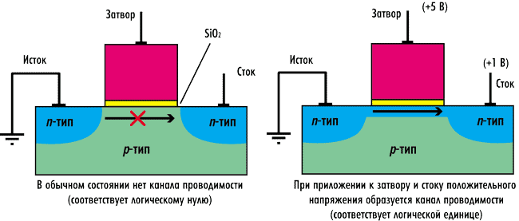
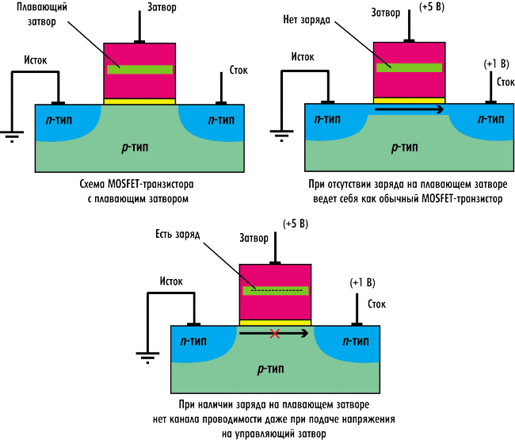

На простейшем уровне ячейка флэшпамяти представляет собой n-канальный MOSFET-транзистор с так называемым плавающим затвором. Напомним, что обычный n-канальный MOSFET-транзистор (структура n-p-n) может находиться в двух состояниях: открытом и запертом (закрытом). Управляя напряжением между стоком и затвором, можно создавать канал проводимости электронов (n-канал) между истоком и стоком (рис. 1). Напряжение, при котором возникает канал проводимости, называется пороговым. Наличие канала проводимости соответствует открытому состоянию транзистора, а отсутствие (когда транзистор не способен проводить ток от истока к стоку) — запертому.

Рис. 1. Устройство MOSFET-транзистора (открытое и закрытое состояние)
В открытом состоянии напряжение между стоком и истоком близко к нулю, а в закрытом может достигать высокого значения. Конечно, сам по себе транзистор не способен сохранять информацию. Собственно, для хранения информации как раз предназначен плавающий затвор (рис. 2). Он выполнен из поликристаллического кремния и полностью окружен слоем диэлектрика, что обеспечивает ему полное отсутствие электрического контакта с элементами транзистора. Плавающий затвор расположен между управляющим затвором и подложкой из p-n-переходов. Такой затвор способен сохранять помещенный на него заряд (отрицательный) в течение неограниченного времени (до 10 лет). Наличие или отсутствие избыточного отрицательного заряда (электронов) на плавающем затворе может трактоваться как логические единица и ноль.

Рис. 2. Устройство транзистора с плавающим затвором и чтение содержимого ячейки памяти